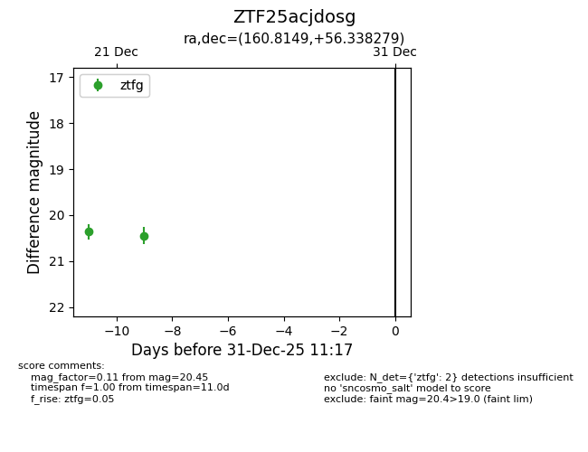
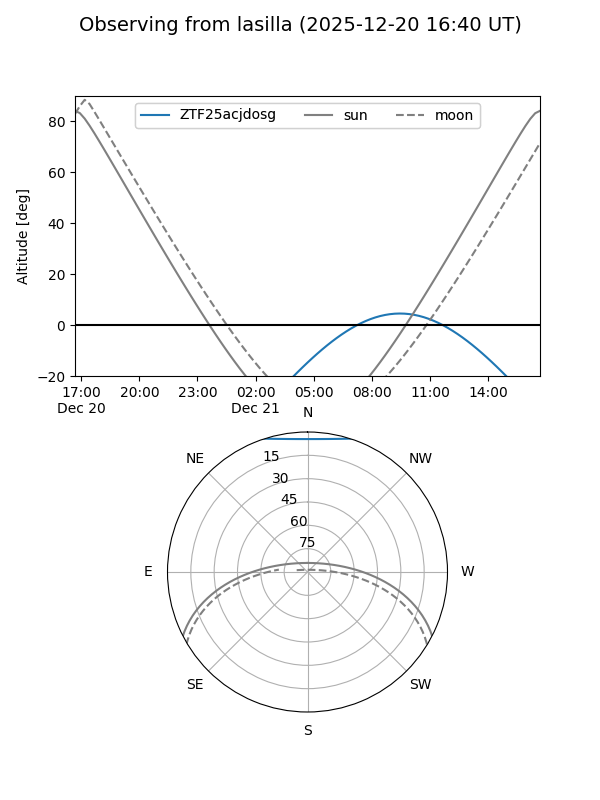
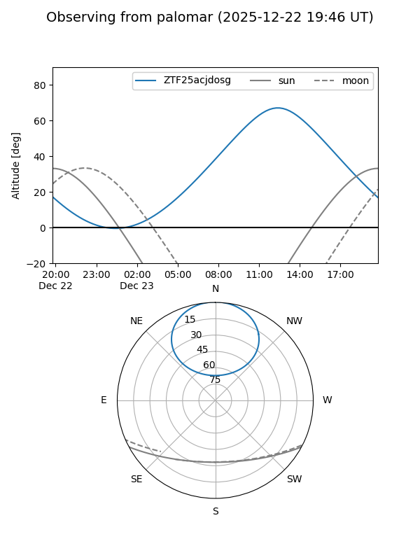

ZTF25acjdosg
Target ZTF25acjdosg at 2025-12-20 13:59
Aliases and brokers:
FINK: fink-portal.org/ZTF25acjdosg
Lasair: lasair-ztf.lsst.ac.uk/objects/ZTF25acjdosg
ALeRCE: alerce.online/object/ZTF25acjdosg
alt names
ZTF25acjdosg (ztf,fink_ztf)
Coordinates:
equatorial (ra, dec) = 160.8149,+56.33828
equatorial (HMS+DMS) = 10:43:15.59,+56:20:17.81
galactic (l, b) = (152.1178,+52.90855)
Flags:
Photometry:
last ztfg=20.36
1 ztfg detections
Lightcurve

Visibility


Additional plots